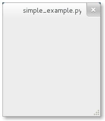

2. Getting Started¶
2.1. Simple Example¶
To start with our tutorial we create the simplest program possible. This program will create an emtpy 200 x 200 pixel window.
1 2 3 4 5 6 7 | #!/usr/bin/python
from gi.repository import Gtk
win = Gtk.Window()
win.connect("delete-event", Gtk.main_quit)
win.show_all()
Gtk.main()
|
We will now explain each line of the example.
#!/usr/bin/python
The first line of all Python programs should start with #! followed by the path to the Python interpreter you want to invoke.
from gi.repository import Gtk
In order to access GTK+ classes and functions we first must import the Gtk module. The next line creates an empty window.
win = Gtk.Window()
Followed by connecting to the window’s delete event to ensure that the application is terminated if we click on the x to close the window.
win.connect("delete-event", Gtk.main_quit)
In the next step we display the window.
win.show_all()
Finally, we start the GTK+ processing loop which we quit when the window is closed (see line 5).
Gtk.main()
To run the program, open a terminal, change to the directory of the file, and enter:
python simple_example.py
2.2. Extended Example¶
For something a little more useful, here’s the PyGObject version of the classic “Hello World” program.

1 2 3 4 5 6 7 8 9 10 11 12 13 14 15 16 17 18 19 | #!/usr/bin/python
from gi.repository import Gtk
class MyWindow(Gtk.Window):
def __init__(self):
Gtk.Window.__init__(self, title="Hello World")
self.button = Gtk.Button(label="Click Here")
self.button.connect("clicked", self.on_button_clicked)
self.add(self.button)
def on_button_clicked(self, widget):
print "Hello World"
win = MyWindow()
win.connect("delete-event", Gtk.main_quit)
win.show_all()
Gtk.main()
|
This example differs from the simple example as we sub-class Gtk.Window to define our own MyWindow class.
class MyWindow(Gtk.Window):
In the class’s constructor we have to call the constructor of the super class. In addition, we tell it to set the value of the property title to Hello World.
Gtk.Window.__init__(self, title="Hello World")
The next three lines are used to create a button widget, connect to its clicked signal and add it as child to the top-level window.
self.button = Gtk.Button(label="Click Here")
self.button.connect("clicked", self.on_button_clicked)
self.add(self.button)
Accordingly, the method on_button_clicked() will be called if you click on the button.
def on_button_clicked(self, widget):
print "Hello World"
The last block, outside of the class, is very similar to the simple example above, but instead of creating an instance of the generic Gtk.Window class, we create an instance of MyWindow.